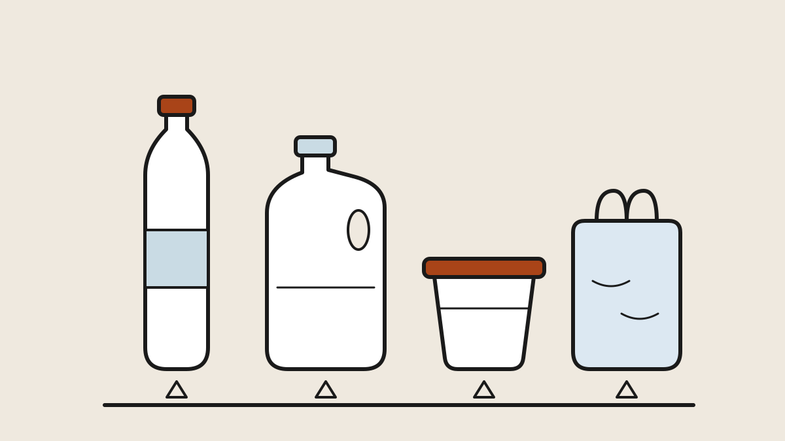
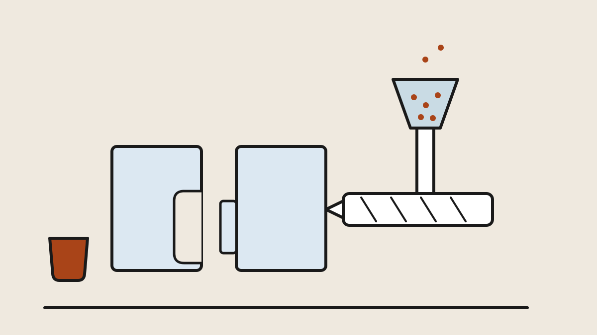
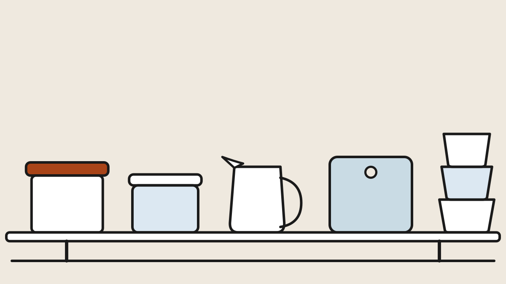
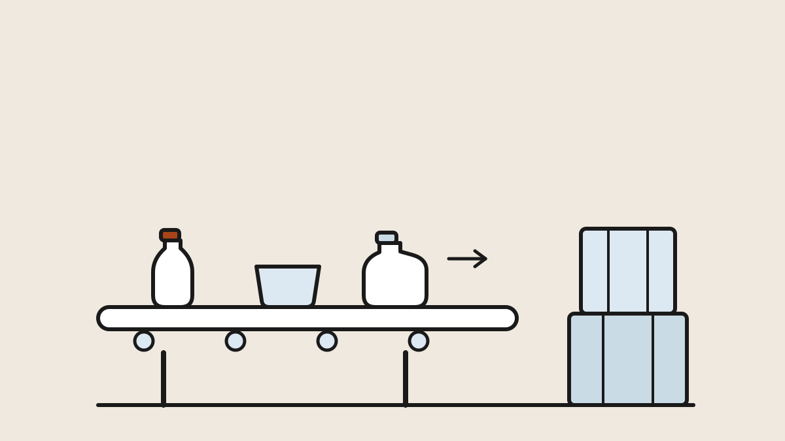
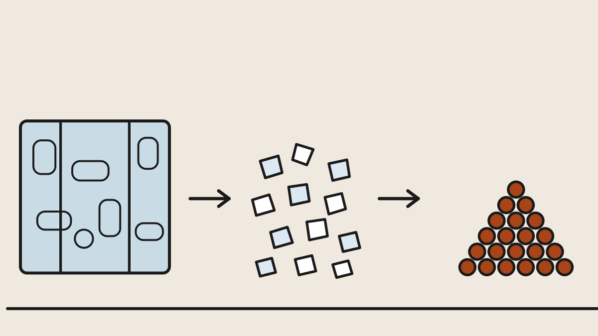

Chapter 1 · Start here
What the recycling-triangle numbers actually identify, the six
plastics behind nearly everything in the house, how to tell them apart
with your hands alone, and the properties table that settles every
microwave and dishwasher question.
By rojan.dev · Published September 28, 2026

Chapter 2
From pellet to product through injection molding, blow molding,
extrusion, thermoforming and rotomolding — and the telltale marks each
one leaves, so you can read any object's manufacture (and its quality)
in the store aisle.
By rojan.dev · Published September 28, 2026

Chapter 3
The house, organized by polymer: which products each plastic
dominates and why, what good versus cheap looks like, how each one
fails — plus the honest safety rules for food, microwaves and
dishwashers, in one place.
By rojan.dev · Published September 28, 2026

Chapter 4
Follow the tub from your cart through the sorting plant's
screens and infrared eyes to the bale, learn why only two polymers
truly come back as products, and leave with the short list of habits
that make your bin genuinely useful.
By rojan.dev · Published September 28, 2026

Chapter 5 · Deep dive
Inside the reclaiming plant: bale grades and prices, the grind
and hot caustic wash, the sink-float tank that separates bottle from
cap, the PVC problem measured in parts per million, and PET's
solid-state upgrade back to food-grade bottle resin.
By rojan.dev · Published September 28, 2026
